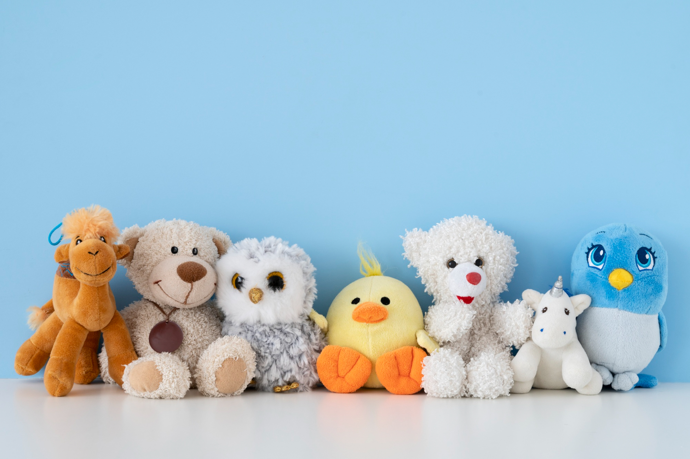
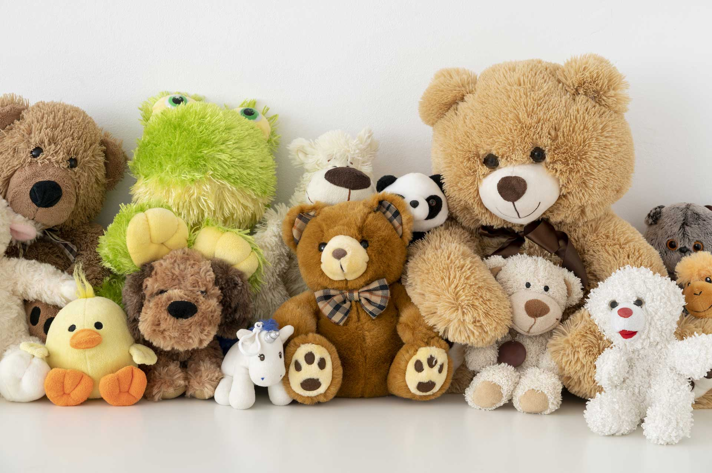

Our Dream
At Plushie Planet, we believe comfort should have a heartbeat. Our small team designs soft companions stitched with imagination, color, and a touch of childhood wonder. From dreamy dragons to pocket-sized pandas, each plush is crafted with quality fabrics and careful hands. We create toys meant to be hugged, gifted, and treasured through every season of life. More than products, our plushies are keepsakes—gentle reminders that warmth, play, and a little magic always belong. We sew joy into every single stitch for all ages.

Our Team

At Plushie Planet, our team is devoted to creating soft companions that feel like childhood in your hands. We sketch, stitch, test, and refine every plush with care, blending imaginative storytelling with quality craftsmanship. From concept to doorstep, we work together to ensure each cuddly character arrives ready to comfort, delight, and spark lasting joy. Every stitch carries warmth, whimsy, and gentle intention for families.